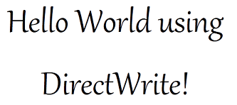
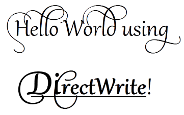

title: Tutorial Getting Started with DirectWrite description: This document shows you how to use DirectWrite and Direct2D to create simple text that contains a single format, and then text that contains multiple formats. ms.assetid: cc2758d7-3f47-452a-8d81-3f777fe490ec keywords:
This document shows you how to use DirectWrite and Direct2D to create simple text that contains a single format, and then text that contains multiple formats.
This tutorial contains the following parts:
The source code shown in this overview is taken from the DirectWrite Hello World sample. Each part is implemented in a separate class (SimpleText and MultiformattedText) and is displayed in a separate child window. Each class represents a Microsoft Win32 window. In addition to the WndProc method, each class contains the following methods:
| Function | Description |
|---|---|
| CreateDeviceIndependentResources | Creates resources that are device independent, so they can be reused anywhere. |
| DiscardDeviceIndependentResources | Releases the device-independent resources after they are no longer needed. |
| CreateDeviceResources | Creates resources, such as brushes and render targets, that are tied to a particular device. |
| DiscardDeviceResources | Releases the device-dependent resources after they are no longer needed. |
| DrawD2DContent | Uses Direct2D to render to the screen. |
| DrawText | Draws the text string by using Direct2D. |
| OnResize | Resizes the Direct2D render target when the window size is changed. |
Â
You can use the sample provided, or use the instructions that follow to add DirectWrite and Direct2D to your own Win32 application. For more information about the sample and the associated project files, see the DirectWrite HelloWorld.
This section shows how to use DirectWrite and Direct2D to render simple text that has a single format, as shown in the following screen shot.

Drawing simple text to the screen requires four components:
The IDWriteTextFormat interface describes the font-family name, size, weight, style, and stretch used to format text, and it describes locale information. IDWriteTextFormat also defines methods for setting and getting the following properties:
The IDWriteTextFormat interface is required for drawing text that uses both of the processes described in this document .
Before you can create an IDWriteTextFormat object, or any other DirectWrite object, you need an IDWriteFactory instance. You use an IDWriteFactory to create IDWriteTextFormat instances and other DirectWrite objects. To obtain a factory instance, use the DWriteCreateFactory function.
In this part, you declare the objects that you will use later for creating and displaying text as private data members of your class. All of the interfaces, functions, and datatypes for DirectWrite are declared in the dwrite.h header file, and those for Direct2D are declared in the d2d1.h; if you haven't already done this, include these headers in your project.
In your class header file (SimpleText.h), declare pointers to IDWriteFactory and IDWriteTextFormat interfaces as private members.
IDWriteFactory* pDWriteFactory_;
IDWriteTextFormat* pTextFormat_;
Declare members to hold the text string to render and the length of the string.
const wchar_t* wszText_;
UINT32 cTextLength_;
Declare pointers to ID2D1Factory, ID2D1HwndRenderTarget, and ID2D1SolidColorBrush interfaces for rendering the text with Direct2D.
ID2D1Factory* pD2DFactory_;
ID2D1HwndRenderTarget* pRT_;
ID2D1SolidColorBrush* pBlackBrush_;
Direct2D provides two types of resources: device-dependent resources and device-independent resources. Device-dependent resources are associated with a rendering device and no longer function if that device is removed. Device-independent resources, on the other hand, can last for the scope of your application.
DirectWrite resources are device-independent.
In this section, you create the device-independent resources that are used by your application. These resources must be freed with a call to the Release method of the interface.
Some of the resources that are used have to be created only one time and are not tied to a device. The initialization for these resources is put in the SimpleText::CreateDeviceIndependentResources method, which is called when initializing the class.
Inside the SimpleText::CreateDeviceIndependentResources method in the class implementation file (SimpleText.cpp), call the D2D1CreateFactory function to create an ID2D1Factory interface, which is the root factory interface for all Direct2D objects. You use the same factory to instantiate other Direct2D resources.
hr = D2D1CreateFactory(
D2D1_FACTORY_TYPE_SINGLE_THREADED,
&pD2DFactory_
);
Call the DWriteCreateFactory function to create an IDWriteFactory interface, which is the root factory interface for all DirectWrite objects. You use the same factory to instantiate other DirectWrite resources.
if (SUCCEEDED(hr))
{
hr = DWriteCreateFactory(
DWRITE_FACTORY_TYPE_SHARED,
__uuidof(IDWriteFactory),
reinterpret_cast<IUnknown**>(&pDWriteFactory_)
);
}
Initialize the text string and store its length.
wszText_ = L"Hello World using DirectWrite!";
cTextLength_ = (UINT32) wcslen(wszText_);
Create an IDWriteTextFormat interface object by using the IDWriteFactory::CreateTextFormat method. The IDWriteTextFormat specifies the font, weight, stretch, style, and locale that will be used to render the text string.
if (SUCCEEDED(hr))
{
hr = pDWriteFactory_->CreateTextFormat(
L"Gabriola", // Font family name.
NULL, // Font collection (NULL sets it to use the system font collection).
DWRITE_FONT_WEIGHT_REGULAR,
DWRITE_FONT_STYLE_NORMAL,
DWRITE_FONT_STRETCH_NORMAL,
72.0f,
L"en-us",
&pTextFormat_
);
}
Center the text horizontally and vertically by calling the IDWriteTextFormat::SetTextAlignment and IDWriteTextFormat::SetParagraphAlignment methods.
// Center align (horizontally) the text.
if (SUCCEEDED(hr))
{
hr = pTextFormat_->SetTextAlignment(DWRITE_TEXT_ALIGNMENT_CENTER);
}
if (SUCCEEDED(hr))
{
hr = pTextFormat_->SetParagraphAlignment(DWRITE_PARAGRAPH_ALIGNMENT_CENTER);
}
In this part, you initialized the device-independent resources that are used by your application. In the next part, you initialize the device-dependent resources.
In this part, you create an ID2D1HwndRenderTarget and an ID2D1SolidColorBrush for rendering your text.
A render target is a Direct2D object that creates drawing resources and renders drawing commands to a rendering device. An ID2D1HwndRenderTarget is a render target that renders to an HWND.
One of the drawing resources that a render target can create is a brush for painting outlines, fills, and text. An ID2D1SolidColorBrush paints with a solid color.
Both the ID2D1HwndRenderTarget and the ID2D1SolidColorBrush interfaces are bound to a rendering device when they are created and must be released and recreated if the device becomes invalid.
Inside the SimpleText::CreateDeviceResources method, check whether the render target pointer is NULL. If it is, retrieve the size of the render area and create an ID2D1HwndRenderTarget of that size. Use the ID2D1HwndRenderTarget to create an ID2D1SolidColorBrush.
RECT rc;
GetClientRect(hwnd_, &rc);
D2D1_SIZE_U size = D2D1::SizeU(rc.right - rc.left, rc.bottom - rc.top);
if (!pRT_)
{
// Create a Direct2D render target.
hr = pD2DFactory_->CreateHwndRenderTarget(
D2D1::RenderTargetProperties(),
D2D1::HwndRenderTargetProperties(
hwnd_,
size
),
&pRT_
);
// Create a black brush.
if (SUCCEEDED(hr))
{
hr = pRT_->CreateSolidColorBrush(
D2D1::ColorF(D2D1::ColorF::Black),
&pBlackBrush_
);
}
}
In the SimpleText::DiscardDeviceResources method, release both the brush and render target.
SafeRelease(&pRT_);
SafeRelease(&pBlackBrush_);
Now that you have created a render target and a brush, you can use them to render your text.
In the SimpleText::DrawText method of your class, define the area for the text layout by retrieving the dimensions of the rendering area, and create a Direct2D rectangle that has the same dimensions.
D2D1_RECT_F layoutRect = D2D1::RectF(
static_cast<FLOAT>(rc.left) / dpiScaleX_,
static_cast<FLOAT>(rc.top) / dpiScaleY_,
static_cast<FLOAT>(rc.right - rc.left) / dpiScaleX_,
static_cast<FLOAT>(rc.bottom - rc.top) / dpiScaleY_
);
Use the ID2D1RenderTarget::DrawText method and the IDWriteTextFormat object to render text to the screen. The ID2D1RenderTarget::DrawText method takes the following parameters:
pRT_->DrawText(
wszText_, // The string to render.
cTextLength_, // The string's length.
pTextFormat_, // The text format.
layoutRect, // The region of the window where the text will be rendered.
pBlackBrush_ // The brush used to draw the text.
);
To render the contents of the window by using Direct2D when a paint message is received, do the following:
hr = CreateDeviceResources();
if (SUCCEEDED(hr))
{
pRT_->BeginDraw();
pRT_->SetTransform(D2D1::IdentityMatrix());
pRT_->Clear(D2D1::ColorF(D2D1::ColorF::White));
// Call the DrawText method of this class.
hr = DrawText();
if (SUCCEEDED(hr))
{
hr = pRT_->EndDraw(
);
}
}
if (FAILED(hr))
{
DiscardDeviceResources();
}
The SimpleText class is implemented in SimpleText.h and SimpleText.cpp.
This section shows how to use DirectWrite and Direct2D to render text with multiple formats, as shown in the following screen shot.

The code for this section is implemented as the MultiformattedText class in the DirectWrite HelloWorld. It's based on the steps from the previous section.
To create multi-formatted text, you use the IDWriteTextLayout interface in addition to the IDWriteTextFormat interface introduced in the previous section. The IDWriteTextLayout interface describes the formatting and layout of a block of text. In addition to default formatting specified by an IDWriteTextFormat object, the formatting for specific ranges of text can be changed by using IDWriteTextLayout. This includes font family name, size, weight, style, stretch, strikethrough, and underlining.
IDWriteTextLayout also provides hit-testing methods. The hit-testing metrics returned by these methods are relative to the layout box specified when the IDWriteTextLayout interface object is created by using the CreateTextLayout method of the IDWriteFactory interface.
The IDWriteTypography interface is used to add optional OpenType typographic features to a text layout, such as swashes and alternative stylistic text sets. Typographic features can be added to a specific range of text within a text layout by calling the AddFontFeature method of the IDWriteTypography interface. This method receives a DWRITE_FONT_FEATURE structure as a parameter that contains a DWRITE_FONT_FEATURE_TAG enumeration constant and a UINT32 execution parameter. A list of registered OpenType features can be found at the OpenType Layout Tag Registry on microsoft.com. For the equivalent DirectWrite enumeration constants, see DWRITE_FONT_FEATURE_TAG.
Declare a pointer to an IDWriteTextLayout interface as a member of the MultiformattedText class.
IDWriteTextLayout* pTextLayout_;
At the end of the MultiformattedText::CreateDeviceIndependentResources method, create an IDWriteTextLayout interface object by calling the CreateTextLayout method. The IDWriteTextLayout interface provides additional formatting features, such as the ability to apply different formats to selected portions of text.
// Create a text layout using the text format.
if (SUCCEEDED(hr))
{
RECT rect;
GetClientRect(hwnd_, &rect);
float width = rect.right / dpiScaleX_;
float height = rect.bottom / dpiScaleY_;
hr = pDWriteFactory_->CreateTextLayout(
wszText_, // The string to be laid out and formatted.
cTextLength_, // The length of the string.
pTextFormat_, // The text format to apply to the string (contains font information, etc).
width, // The width of the layout box.
height, // The height of the layout box.
&pTextLayout_ // The IDWriteTextLayout interface pointer.
);
}
Formatting, such as the font size, weight, and underlining, can be applied to substrings of the text to be displayed by using the IDWriteTextLayout interface.
Set the font size for the substring "Di" of "DirectWrite" to 100 by declaring a DWRITE_TEXT_RANGE and calling the IDWriteTextLayout::SetFontSize method.
// Format the "DirectWrite" substring to be of font size 100.
if (SUCCEEDED(hr))
{
DWRITE_TEXT_RANGE textRange = {20, // Start index where "DirectWrite" appears.
6 }; // Length of the substring "Direct" in "DirectWrite".
hr = pTextLayout_->SetFontSize(100.0f, textRange);
}
Underline the substring "DirectWrite" by calling the IDWriteTextLayout::SetUnderline method.
// Format the word "DWrite" to be underlined.
if (SUCCEEDED(hr))
{
DWRITE_TEXT_RANGE textRange = {20, // Start index where "DirectWrite" appears.
11 }; // Length of the substring "DirectWrite".
hr = pTextLayout_->SetUnderline(TRUE, textRange);
}
Set the font weight to bold for the substring "DirectWrite" by calling the IDWriteTextLayout::SetFontWeight method.
if (SUCCEEDED(hr))
{
// Format the word "DWrite" to be bold.
DWRITE_TEXT_RANGE textRange = {20,
11 };
hr = pTextLayout_->SetFontWeight(DWRITE_FONT_WEIGHT_BOLD, textRange);
}
Declare and create an IDWriteTypography interface object by calling the IDWriteFactory::CreateTypography method.
// Declare a typography pointer.
IDWriteTypography* pTypography = NULL;
// Create a typography interface object.
if (SUCCEEDED(hr))
{
hr = pDWriteFactory_->CreateTypography(&pTypography);
}
Add a font feature by declaring a DWRITE_FONT_FEATURE object that has the stylistic set 7 specified and calling the IDWriteTypography::AddFontFeature method.
// Set the stylistic set.
DWRITE_FONT_FEATURE fontFeature = {DWRITE_FONT_FEATURE_TAG_STYLISTIC_SET_7,
1};
if (SUCCEEDED(hr))
{
hr = pTypography->AddFontFeature(fontFeature);
}
Set the text layout to use the typography over the whole string by declaring a DWRITE_TEXT_RANGE variable and calling the IDWriteTextLayout::SetTypography method and passing in the text range.
if (SUCCEEDED(hr))
{
// Set the typography for the entire string.
DWRITE_TEXT_RANGE textRange = {0,
cTextLength_};
hr = pTextLayout_->SetTypography(pTypography, textRange);
}
Set the new width and height for the text layout object in the MultiformattedText::OnResize method.
if (pTextLayout_)
{
pTextLayout_->SetMaxWidth(static_cast<FLOAT>(width / dpiScaleX_));
pTextLayout_->SetMaxHeight(static_cast<FLOAT>(height / dpiScaleY_));
}
To draw the text with the text layout settings specified by the IDWriteTextLayout object, change the code in the MultiformattedText::DrawText method to use IDWriteTextLayout::DrawTextLayout.
Delcare a D2D1_POINT_2F variable and set it to the upper-left point of the window.
D2D1_POINT_2F origin = D2D1::Point2F(
static_cast<FLOAT>(rc.left / dpiScaleX_),
static_cast<FLOAT>(rc.top / dpiScaleY_)
);
Draw the text to the screen by calling the ID2D1RenderTarget::DrawTextLayout method of the Direct2D render target and passing the IDWriteTextLayout pointer.
pRT_->DrawTextLayout(
origin,
pTextLayout_,
pBlackBrush_
);
The MultiformattedText class is implemented in MultiformattedText.h and MultiformattedText.cpp.
Â
Â